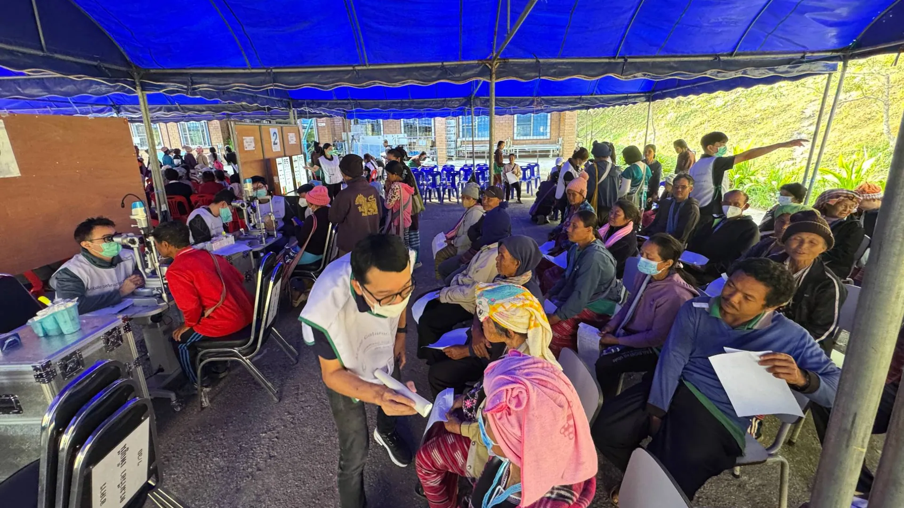

Healthcare Access
About Healthcare Access
Many highland families in Mae Chaem District live more than eight hours from the nearest hospital. MedLink works with volunteer medical teams and Banphaeo Hospital to bring doctors and medicine to them. We also teach first aid, so people can handle injuries before help arrives.
19 photos
Mae Chaem Medical Outreach
Since 2024, MedLink has joined volunteer medical teams and Banphaeo Hospital on trips into the mountains of Mae Chaem. We raise the money for medicine, coordinate the doctors, and hand out medicine on site.
- 8+ doctors
- 700+ patients treated
- Since 2024
2 photos
Cataract Surgery and Lens Replacement Program
A cataract clouds the lens of the eye and can lead to blindness. Surgery replaces the cloudy lens with a clear artificial one, but it is hard to reach from the highlands.
Since 2026, MedLink has supported a cataract surgery and lens replacement program with volunteer medical teams and Banphaeo Hospital. The program continues in 2027.
- [Number of patients] patients
- Since 2026
20 photos
First Aid Training
MedLink members teach first aid to lower secondary school students in remote areas, including at Saint Joseph Mae Chaem School. Students learn skills they can use when a hospital is hours away.
- 300+ children trained
- 10+ hours of teaching
Funding the Medicine
Our fundraising pays for the medicine on these trips: $23k+ raised across 9 fundraisers so far.